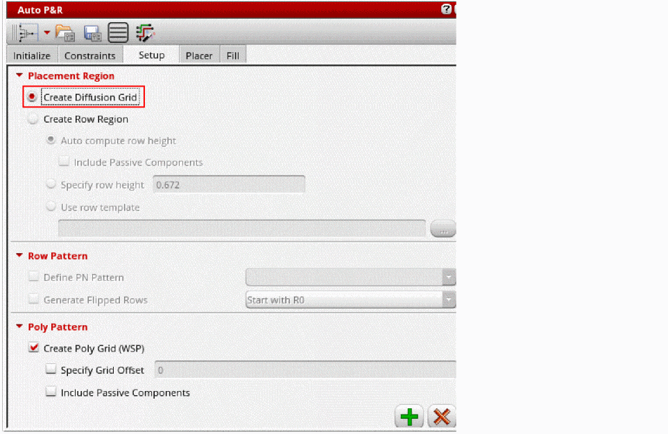

Placing Multi-Height Devices Using Automatic Device Placer
The Virtuoso automated device placement and routing flow supports diffusion grid-based placement, which enables rowless placement of multi-height devices. This technology creates a specialized grid based on the heights of the diffusion layers of different devices in a design. During placement, the devices in the design are snapped to the grid according to the height of their diffusion layers.
To generate a diffusion grid and place multi-height devices in it:
-
Set the enablePlaceWithWsp environment variable to
tto enable the flow. - Open the required layout view in Layout EXL or higher tiers.
-
Display the Setup tab of the Auto P&R assistant.
The Create Diffusion Grid check box appears on this tab only ifenablePlaceWithWspis set totbefore launching the session.
 - Select Create Diffusion Grid. All row region-related options are automatically inactivated.
- Click to generate the diffusion grid.
-
Open the Track Pattern assistant to view the diffusion grids.
WSPs of different widths are generated to match the height of devices in the design.
- Open the Place tab of the Auto P&R assistant.
- Click to run the placer.
Diffusion height-based placement is done. Devices are snapped to grids according to their height of diffusion (Active).
Related Topics
Placement of Non-Uniform Devices and Passive Devices
Placing Devices Automatically in the Automated Device Placement and Routing Flow
Deriving Row Regions and Grids in the Automated Device Placement and Routing Flow
Return to top